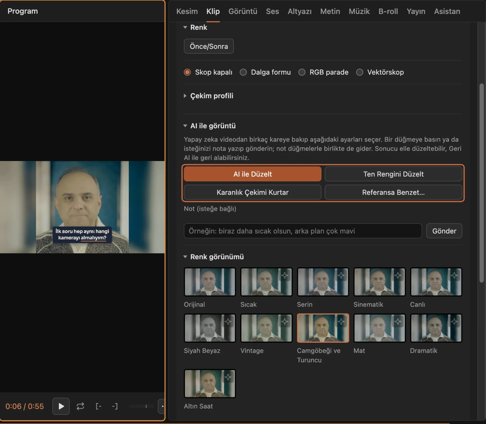
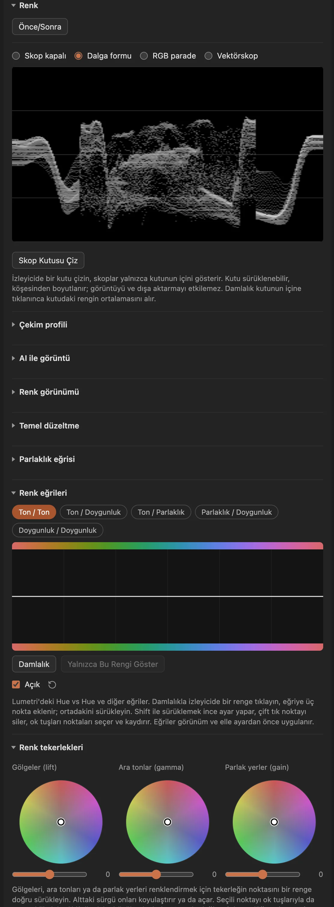

Renk
Renk her klibin ve kaydın her parçasının kendisinin. Birini seç ve Klip › Renk'i aç: yapay zeka senin için ayarlayabilir, her ayar elle de orada.

AI ile görüntü
Yapay zeka birkaç kareye bakar ve alttaki ayarları yapar. Birine bas:
- AI ile Düzelt: pozlama, beyaz dengesi ve ten rengi, doğal olacak şekilde.
- Ten Rengini Düzelt: yalnızca ten rengi, diğerlerine dokunmaz.
- Karanlık Çekimi Kurtar: az ışıkta çekilmiş kayıtta yüzü ve gölgeleri açar.
- Referansa Benzet…: seçtiğin bir görselin görünümüne yaklaştırır.
Ya da ne istediğini Not (isteğe bağlı)'a yaz, örneğin “biraz daha sıcak olsun, arka plan çok mavi”, ve Gönder'e bas. Sonucu elle ayarla ya da Geri Al. Bu, yapay zeka modelini kullanır.
Kayıtları Eşleştir diğer kameraların rengini ana kayda uydurur, kesimler atlamaz; bir çekimde Ana Kayda Eşleştir aynısını tek klip için yapar.
Görünümler
Renk görünümü: Orijinal, Sıcak, Serin, Sinematik, Canlı, Siyah Beyaz, Vintage, Camgöbeği ve Turuncu, Mat, Dramatik, Altın Saat. Görünüm yoğunluğu ne kadarını alacağını ayarlar. Görünüm bu bilgisayarda çalışır.
Elle
- Temel düzeltme: beyaz dengesi, ton (pozlama, kontrast, parlak alanlar) ve renk (doygunluk, canlılık). Bir sürgüye çift tıklamak onu sıfırlar.
- Parlaklık eğrisi ve Renk eğrileri (Ton / Ton, Ton / Doygunluk, Ton / Parlaklık, Parlaklık / Doygunluk, Doygunluk / Doygunluk). Damlalık ile izleyicide bir renge tıkla, eğriye üç nokta gelir; ortadakini sürükle.
- Renk tekerlekleri: Gölgeler (lift), Ara tonlar (gamma), Parlak yerler (gain). Tekerleğin noktasını bir renge doğru sürükle; sürgüsü onları koyulaştırır ya da açar.
- Çekim profili: kamera log çektiyse (soluk, gri bir görüntü) profilini seç; başka her renk ayarından önce normale çekilir.
- LUT Yükle (.cube): dışa aktarımda her şeyin üstüne konan bir LUT.
- Keskinlik, vinyet ve cilt: Keskinleştir, Kenarları karart, Cilt yumuşatma.

Skoplar
Dalga formu, RGB parade ya da Vektörskop oynatma kafasındaki kareyi ölçer. Skop Kutusu Çiz yalnızca görüntünün bir bölümünü ölçer, mesela bir yüzü.
Birçok klibe tek değişiklik
Ayarlama katmanı altındaki her şeyi renklendirir. Timeline'a sağ tıkla, Ayarlama Katmanı Ekle; onu kliplerin üstündeki bir ize koy ve bir klip gibi ayarla. Klipleri aynı renge getirmek için Ayarları Kopyala ve Ayarları Yapıştır'ı ya da Görünümü Hazır Ayar Olarak Kaydet…'i de kullanabilirsin.
Karşılaştır
İzleyicideki Önce/Sonra görüntüyü renk ayarların olmadan ya da ikisini yan yana gösterir (Program).